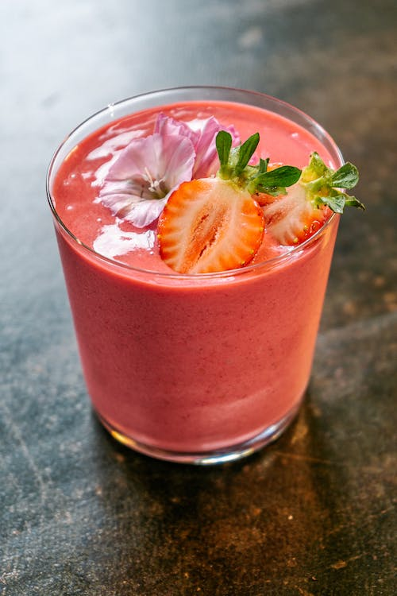

Home
About
Contact
Smoothies
Smoothie recipes
Find a new healthy breakfast or snack today!
Banana, strawberry, and dozens more fruit and vegetable smoothie recipes.
Fruit and Yogurt Smoothie
This yogurt smoothie recipe is delicious! You may substitute the strawberries for any other berries or fruit.

Ingredients:
- 1 cup strawberries
- 1 banana
- ½ cup yogurt
- ¼ cup pineapple juice
- 1 teaspoon orange juice
- 1 teaspoon milk
Directions:
Combine strawberries, banana, yogurt, pineapple juice, sugar, orange juice, and milk in a blender; blend until smooth.